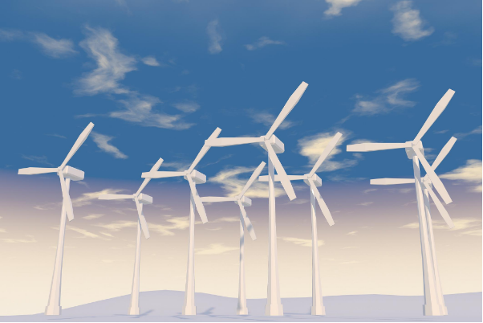

Technical Consultancy
We provide unbiased, manufacturer-independent engineering consultancy for renewable energy and industrial power systems. Our expert services help clients evaluate technical challenges, improve equipment reliability, optimize operational performance and make informed engineering decisions through practical experience and analytical expertise.
Independent
Engineering Advice
Failure
Analysis & Diagnostics
Asset
Performance Optimization
Technical
Audits & Assessments
Failure Analysis
Root cause investigations with detailed engineering reports and corrective recommendations.
Technical Audits
Independent equipment assessments covering condition, operational risk and remaining asset life.
Condition Monitoring
Monitoring strategies and predictive maintenance solutions that improve long-term equipment reliability.
Performance Optimization
Data-driven engineering analysis focused on improving efficiency, availability and system performance.
Reliability Studies
Reliability modelling, FMEA studies and lifecycle cost analysis for critical engineering assets.
Training & Knowledge
Technical workshops and engineering knowledge transfer tailored to operations and maintenance teams.

Independent Advice.
Practical Engineering.
Our consulting services combine decades of engineering experience with structured technical analysis to solve complex operational challenges. We work across renewable energy, industrial power electronics and electrical infrastructure, helping organizations improve reliability, reduce operational risk and maximize long-term asset value.
Every recommendation is developed independently and supported by engineering evidence, ensuring practical, commercially viable and technically robust solutions.
Independent Assessments
Objective engineering evaluations without manufacturer bias.
Technical Excellence
Practical engineering solutions backed by industry experience.
Asset Optimization
Maximize performance while extending equipment life.
Operational Reliability
Improve system availability through informed engineering decisions.
Engineering Consulting Services
We provide comprehensive technical consultancy that supports engineering teams throughout the entire asset lifecycle—from investigation and evaluation to optimization and implementation.
Failure Analysis
Root cause investigations using engineering methodologies, operational data and component-level analysis to identify failures and prevent recurrence.
Technical Audits
Independent engineering assessments that evaluate equipment condition, operational risks and maintenance priorities.
Condition Monitoring
Development of monitoring strategies including sensor selection, diagnostics and predictive maintenance planning.
Performance Optimization
Engineering analysis focused on improving efficiency, energy yield, availability and operational performance.
Reliability Studies
Reliability modelling, FMEA, lifecycle assessments and maintenance optimization for critical engineering assets.
Training & Knowledge Transfer
Customized technical workshops and engineering guidance for operations, maintenance and project teams.
Engineering Support Across Critical Systems
Our consultants combine field experience with advanced engineering practices to support renewable energy developers, utilities, manufacturers and industrial facilities.
Renewable Energy
Wind turbines, solar plants, converters and electrical balance of plant systems.
Power Electronics
Inverters, converters, rectifiers, IGBT systems and associated control electronics.
Electrical Infrastructure
Distribution systems, switchgear, protection systems and power quality assessments.
Asset Reliability
Lifecycle extension strategies, maintenance optimization and operational risk reduction.
Technical Due Diligence
Independent engineering reviews supporting investment, modernization and acquisition decisions.
Operational Support
Commissioning assistance, troubleshooting and engineering support during critical project phases.
A Structured Engineering Approach
Understand
Define project objectives, technical challenges and operational expectations.
Evaluate
Review equipment, documentation and operating data using proven engineering methodologies.
Analyse
Perform technical investigations, simulations and engineering assessments.
Recommend
Deliver practical recommendations supported by technical evidence and commercial considerations.
Support
Assist implementation, monitor progress and provide ongoing engineering guidance.
Trusted Engineering Expertise
Our consultancy combines technical excellence with practical industry experience, delivering solutions that are independent, data-driven and focused on long-term operational success.
Independent Engineering
Objective technical recommendations without manufacturer bias, ensuring decisions are based solely on engineering merit.
Industry Experience
Extensive expertise across renewable energy, power electronics and industrial electrical systems.
Risk Reduction
Identify technical risks early and implement strategies that improve operational safety and equipment reliability.
Performance Focus
Practical engineering solutions designed to maximize efficiency, availability and long-term asset value.
Make Better Engineering Decisions
Whether you require technical investigations, equipment assessments, performance optimization or strategic engineering guidance, our experts are ready to help you achieve reliable and sustainable results.